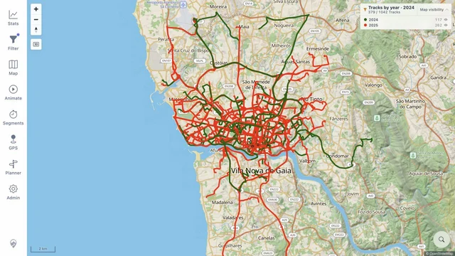
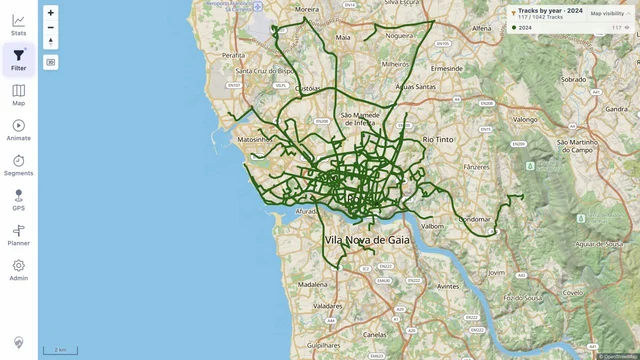
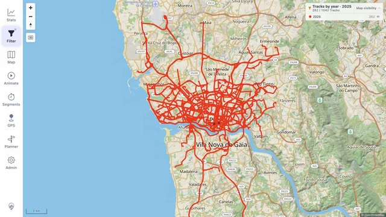

Choose which years to include
Use Included categories to select years within the result. This selection also applies to the track browser and statistics.
Show one year, then switch to another. Or show both years on the same map, with a different color for each.

Use the same map area to look at where you went in each year.


In Tracks by year → Criteria, set From year to 2024 and To year to 2025. Both years appear together, with a separate color for each. Open Map colors to change the palette.
Use Included categories to select years within the result. This selection also applies to the track browser and statistics.
Use Map visibility in the map legend to hide or show a year's lines while keeping the current filter.
Open Map → Your data → Heatmap to turn on the optional layer. Adjust its opacity alongside the track lines. The year comparisons above use filters and track colors.
These are real app screenshots using the public demo's Porto taxi tracks. Dates are assigned for the demo, so the years are examples. No private tracks were used.
Track source: Porto Taxi Service Trajectory dataset by L. Moreira-Matias and collaborators, UCI Machine Learning Repository, CC BY 4.0. Map data © OpenStreetMap contributors. See screenshot details.